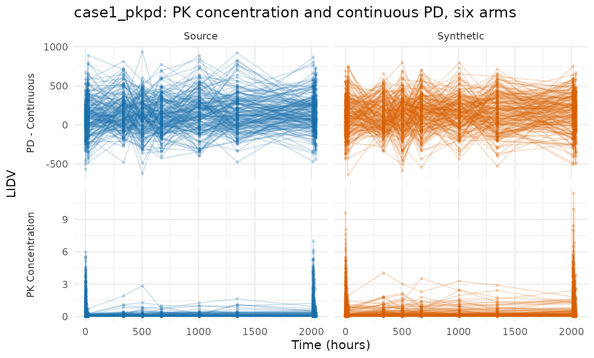
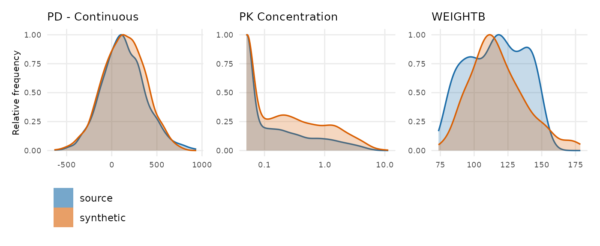
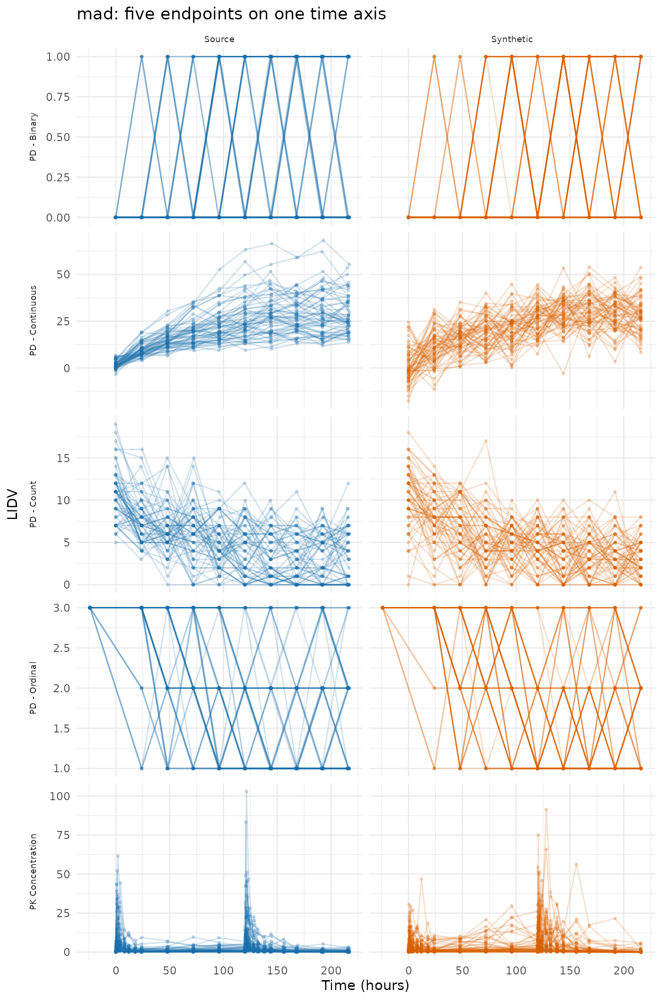
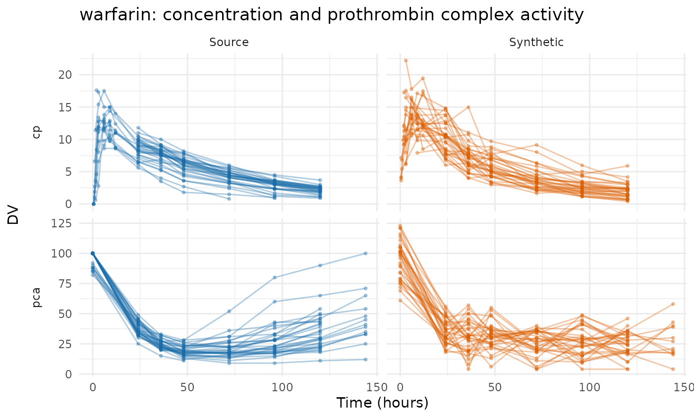
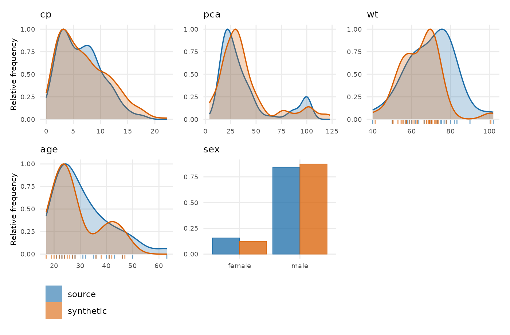
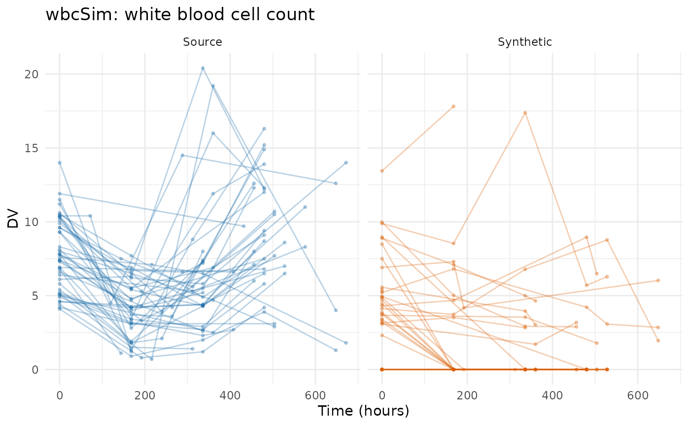
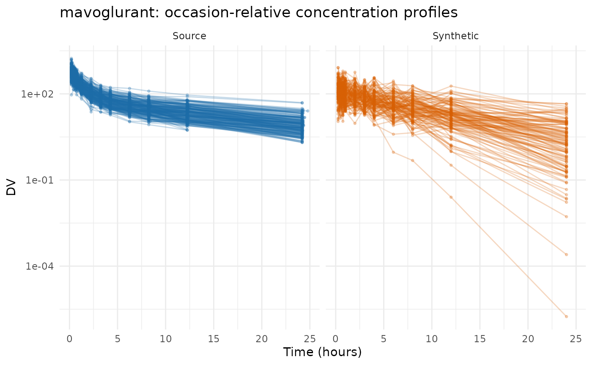
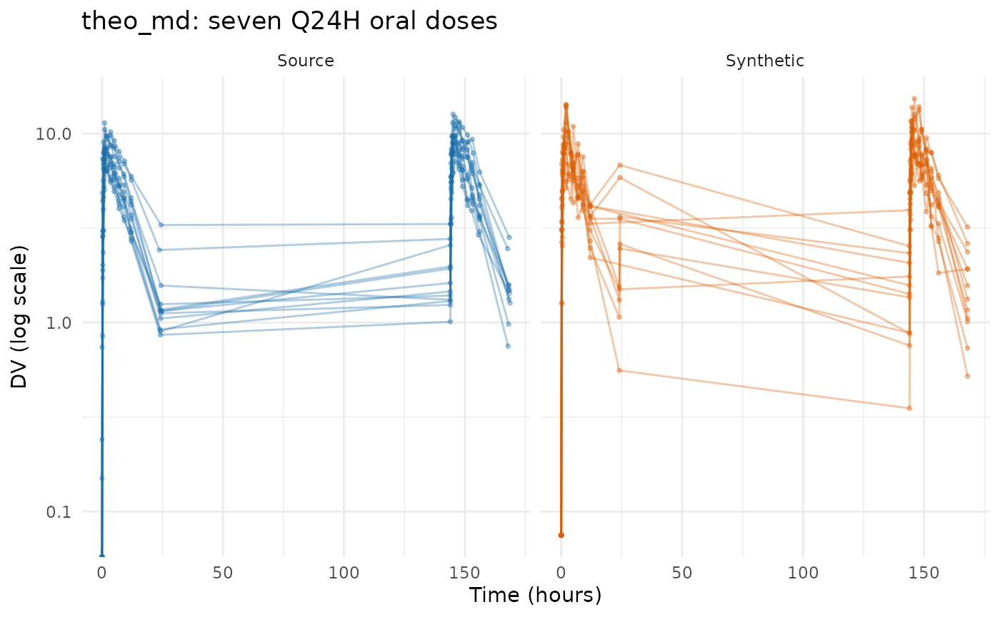
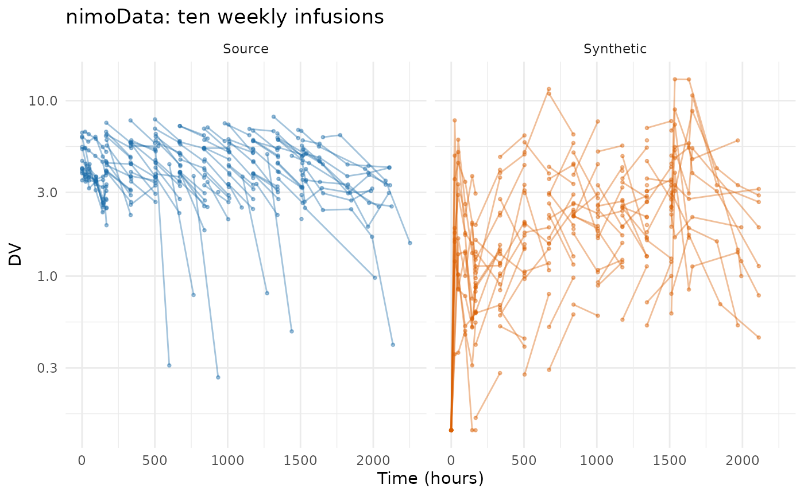
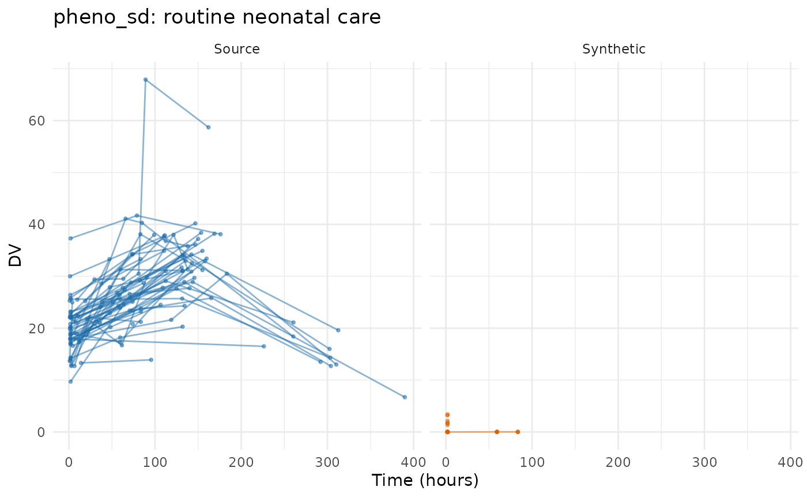

Evaluating the PMX model generator on public data
Andrew Stein
Source:vignettes/articles/pmxmodel-public-data-examples.Rmd
pmxmodel-public-data-examples.RmdThis article runs synpmx_model() over the same eight
public datasets that Evaluating
AVATAR on public data and Evaluating
PCA on public data run their generators over, so the three can be
read against each other on identical studies.
This generator asks more of a study than the other two, and what separates these datasets is whether the study can identify a population model at all. Three requirements, each of which refuses rather than guesses:
-
A declared nominal grid, as
synpmx_pca()needs — the visit model is built on it. -
At least twenty subjects. A covariance matrix
fitted to fewer describes those subjects rather than a population, so
min_subjectsrefuses below that and says so. - An endpoint that behaves like a drug concentration: absent before the first dose and rising with dose. Without one there is nothing to put a structural model on.
Five studies clear all three unaided. The other three run once
something is declared, and what each has to declare is the useful part:
theo_md needs its subject floor lifted,
nimoData needs both that and its concentration named, and
pheno_sd needs its concentration named — and then fits on a
“grid” that is really one clock reading per patient, which is the case
to read before declaring a grid your study does not have.
All eight run below. Every refusal is shown before the declaration that lifts it, because the refusal is what you will meet first.
Every fit below reads patient data once, through
synpmx_model_estimate(). Everything after that — every
figure, every table, every scorecard — is computed from the fit and
never touches the source again.
Plotting and reporting helpers used throughout this vignette
# Observation rows only, source beside synthetic on a shared y axis, one row per
# endpoint. The same figure the PCA survey draws, so the two can be compared
# panel for panel.
overlay_plot <- function(source, synthetic, roles, title,
y_label = "DV", log_y = FALSE, alpha = 0.3,
max_time = Inf) {
frame <- function(data, label) {
observed <- as.character(data[[roles$evid]]) %in% c("0", "0.0") &
!is.na(data[[roles$dv]])
if (!is.null(roles$mdv)) {
observed <- observed & as.character(data[[roles$mdv]]) %in% c("0", "0.0")
}
observed <- observed & as.numeric(data[[roles$time]]) <= max_time
data.frame(
dataset = factor(label, levels = c("Source", "Synthetic")),
subject = as.character(data[[roles$id]][observed]),
occasion = if (is.null(roles$occasion)) "1" else
as.character(data[[roles$occasion]][observed]),
time = as.numeric(data[[roles$time]][observed]),
dv = as.numeric(data[[roles$dv]][observed]),
endpoint = if (is.null(roles$dvid)) "DV" else
as.character(data[[roles$dvid]][observed]),
stringsAsFactors = FALSE
)
}
plotted <- rbind(frame(source, "Source"), frame(synthetic, "Synthetic"))
figure <- ggplot2::ggplot(
plotted,
ggplot2::aes(time, dv,
group = interaction(dataset, subject, occasion),
colour = dataset)
) +
ggplot2::geom_line(alpha = alpha) +
ggplot2::geom_point(alpha = alpha, size = 0.7) +
(if (length(unique(plotted$endpoint)) > 1L) {
ggplot2::facet_grid(endpoint ~ dataset, scales = "free_y", switch = "y")
} else {
ggplot2::facet_wrap(~dataset)
}) +
ggplot2::scale_colour_manual(values = comparison_colours) +
ggplot2::labs(x = "Time (hours)", y = y_label, title = title) +
ggplot2::theme_minimal() +
ggplot2::theme(legend.position = "none", strip.placement = "outside")
if (isTRUE(log_y)) figure + ggplot2::scale_y_log10() else figure
}
overlay_height <- function(data, roles, per_endpoint = 2.2, minimum = 3.4) {
observed <- as.character(data[[roles$evid]]) %in% c("0", "0.0")
endpoints <- if (is.null(roles$dvid)) 1L else
length(unique(data[[roles$dvid]][observed]))
max(minimum, per_endpoint * endpoints)
}
# Every dataset is run the same way and its numbers collected in one place, so
# the cross-dataset tables at the end cannot drift from the sections above them.
runs <- list()
model_run <- function(label, source, roles, file, seed) {
fit <- stored_fit(file)
synthetic <- synpmx_model_generate(fit, seed = seed)
runs[[label]] <<- list(label = label, source = source, roles = roles,
fit = fit, synthetic = synthetic,
card = synpmx_scorecard(source, synthetic, roles))
invisible(runs[[label]])
}
# Nearest-neighbour snapping onto a stated design grid, as in the PCA survey:
# which grid to snap to is a statement about the study and is written out at
# each call.
snap_to <- function(x, grid) {
grid[max.col(-abs(outer(x, grid, "-")), ties.method = "first")]
}case1_pkpd: six arms and a censored endpoint
180 patients across six treatment arms, two endpoints keyed by a
character NAME column, a baseline weight and a
CENS column. This is the study the three demos share.
case1_pkpd <- as.data.frame(
get(utils::data(list = "case1_pkpd", package = "xgxr"))
)
# That study's CENS is meaningful only for PK: the PD effect is signed, so a
# left-censored PD row would report a value above the uncensored ones.
case1_pkpd$CENS <- ifelse(case1_pkpd$NAME == "PD - Continuous", 0,
case1_pkpd$CENS)
case1_roles <- pmx_roles(
id = "ID", time = "TIME", dv = "LIDV", cens = "CENS", amt = "AMT",
evid = "EVID", cmt = "CMT", dvid = "NAME", nominal_time = "NOMTIME",
strata = c("TRTACT", "DOSE"), covariates = "WEIGHTB", keep = "STUDY"
)
case1 <- model_run("case1_pkpd", case1_pkpd, case1_roles,
"case1-pkpd-model-fit.rds", seed = 808)
case1$fit
#> A fitted PMX model, from synpmx_model_estimate()
#>
#> fitted on 180 patients, 6 arm(s)
#> structural 1cmt_oral (chosen from 1 candidate(s) on AIC)
#> fixed cl 8.168, v 111, ka 6.471
#> random on cl, v, ka
#> pk endpoint PK Concentration
#>
#> These parameters are not estimates to report. They exist to make
#> simulated profiles resemble the source study; the candidate set is too
#> small and the covariate model too thin for any of them to answer a
#> scientific question.
compare_pmx_distributions(case1$source, case1$synthetic, case1_roles)
synpmx_scorecard_datatable(case1$card)Nothing fails. A5a reads observations per patient falling from 30.7
to 29, which is the visit model drawing attendance rather than copying
it, and D1 puts the concentration’s standard deviation at 1.3 times the
source’s. vignette("pmxmodel-demo") works this study end to
end, including what its 46% censoring and its PD endpoint cost.
Four rows read not applicable on every card in this
article, so they are worth reading once here. B1a, B1b and C2 need a run
record that synpmx_avatar() writes and this generator does
not. B4a asks whether a generated set of observation times copies a real
one, which is a disclosure question only where the set was taken from
somebody: this generator decides each visit independently from a per-arm
probability, so a match is a coincidence with a computable chance.
B4b is the row that carries the claim here, and it is 0 on every
dataset below: no value any patient measured is reproduced.
mad: five endpoints, only one of them a concentration
60 subjects in a multiple-ascending-dose study with a declared
NOMTIME and five endpoints — PK concentration, continuous
PD, and ordinal, count and binary PD. The generator fits a structural
model to the concentration and a shape to each continuous PD endpoint;
the discrete ones are a question this generator does not answer.
mad <- as.data.frame(get(utils::data(list = "mad", package = "xgxr")))
mad_roles <- pmx_roles(
id = "ID", time = "TIME", dv = "LIDV", amt = "AMT", evid = "EVID",
cmt = "CMT", dvid = "NAME", mdv = "MDV", nominal_time = "NOMTIME",
strata = c("TRTACT", "DOSE"), covariates = c("WEIGHTB", "SEX")
)
mad_run <- model_run("mad", mad, mad_roles, "mad-model-fit.rds", seed = 909)
mad_run$fit
#> A fitted PMX model, from synpmx_model_estimate()
#>
#> fitted on 60 patients, 6 arm(s)
#> structural 1cmt_oral (chosen from 1 candidate(s) on AIC)
#> fixed cl 5.564, v 153.6, ka 3.929
#> random on cl, v, ka
#> pk endpoint PK Concentration
#>
#> These parameters are not estimates to report. They exist to make
#> simulated profiles resemble the source study; the candidate set is too
#> small and the covariate model too thin for any of them to answer a
#> scientific question.
synpmx_scorecard_datatable(mad_run$card)Nothing fails, and A3 reads 5 of 5: every endpoint survives, including the three discrete ones, which are drawn from the level frequencies their arm holds at each visit rather than modelled. D1 is the only row to read, at 0.81 times the source’s spread on the concentration.
This is also the study that found a defect: a visit where every patient recorded the same level of an ordinal endpoint left the draw with a single level, and the draw read that level as a count of levels rather than as the level itself. Fixed, and pinned by a regression test.
warfarin: a single dose, and no dose levels to compare
32 subjects, a single oral dose, a PK endpoint (cp) and
a PD one (pca) on different time courses. Its 16 recorded
observation times are the protocol’s, so declaring
nominal_time from time states something true
about this study rather than constructing a grid.
data("warfarin", package = "nlmixr2data")
warfarin <- as.data.frame(warfarin)
warfarin$ntime <- warfarin$time
warfarin_roles <- pmx_roles(
id = "id", time = "time", nominal_time = "ntime", dv = "dv", amt = "amt",
evid = "evid", dvid = "dvid", covariates = c("wt", "age", "sex")
)
warfarin_run <- model_run("warfarin", warfarin, warfarin_roles,
"warfarin-model-fit.rds", seed = 404)
model_report(warfarin_run$fit)
#> What this fitted model carries
#>
#> Estimated by nlmixr2
#> structural model 1cmt_oral
#> fixed effects cl 0.1361, v 7.802, ka 0.562
#> between-subject cl 0.252, v 0.14, ka 0.638 (as SD on the log scale)
#> residual error additive 1.07
#> covariate effects cl ~ (wt/70)^0.75, v ~ (wt/70)^1.00
#> pd shapes pca: linear
#>
#> Summarized from the source, not estimated
#> cohort 32 patients in 1 arm(s)
#> visit model 22 grid cells over 2 endpoint(s)
#> dosing model 1 planned cycle(s) per arm | no reductions, skips or early stops
#>
#> How the concentration endpoint was decided
#> endpoint cp (inferred)
#> endpoint compartment post_dose shape proportional
#> cp NA TRUE TRUE NA
#> pca NA TRUE FALSE NA
#> design the median profile rises to a peak at 9 before declining, and 31% of subjects do too
#>
#> Covariate against the individual random effects
#> covariate parameter correlation
#> age ka -0.260
#> sex v -0.225
#> age cl 0.160
#> sex ka -0.095
#> wt cl -0.078
#>
#> A covariate that moves with a random effect and is not in the model above
#> is generated independently of the profiles, so the synthetic data carries
#> no relationship between them. `synpmx_avatar()` keeps those relationships
#> without modelling them.
compare_pmx_distributions(warfarin_run$source, warfarin_run$synthetic,
warfarin_roles)
synpmx_scorecard_datatable(warfarin_run$card)Read the design line in the report above rather than the parameters.
It says the median profile peaks at 9 h and that 31% of subjects
do too — 22 of the 32 are first sampled at 24 h, well past the
peak, so most individual profiles only decline. The route was decided
from the pooled median rather than by a per-subject vote for exactly
that reason, and the low percentage is the fit telling you how much it
had to go on. proportional reads NA for the
same kind of reason: every patient gets the same dose, so there are no
dose levels to compare and the residual error falls back to
additive.
Nothing fails; D1 at 1.2 times the source’s spread on cp
is the only row to read.
wbcSim: an infusion and a delayed response
45 subjects with infusion start/stop pairs and a delayed white-blood-cell decline, nadir and recovery. The concentration this generator looks for is not here: what is recorded is the response.
data("wbcSim", package = "nlmixr2data")
wbcSim <- as.data.frame(wbcSim)
wbcSim$NTIME <- wbcSim$TIME
wbc_roles <- pmx_roles(
id = "ID", time = "TIME", nominal_time = "NTIME", dv = "DV", amt = "AMT",
evid = "EVID", cmt = "CMT", rate = "RATE"
)
wbc_run <- model_run("wbcSim", wbcSim, wbc_roles, "wbcsim-model-fit.rds",
seed = 505)
model_report(wbc_run$fit)
#> What this fitted model carries
#>
#> Estimated by nlmixr2
#> structural model 1cmt_infusion
#> fixed effects cl 0.01245, v 20.4
#> between-subject cl 0.353, v 0.32 (as SD on the log scale)
#> residual error proportional 0.347
#> covariate effects none
#>
#> Summarized from the source, not estimated
#> cohort 45 patients in 1 arm(s)
#> visit model 11 grid cells over 1 endpoint(s)
#> dosing model 2 planned cycle(s) per arm | 1 of 1 arm(s) reduce, skip or stop early
#>
#> How the concentration endpoint was decided
#> endpoint DV (inferred)
#> endpoint compartment post_dose shape proportional
#> DV FALSE TRUE TRUE NA
#> design a nonzero `rate` on the dose records
synpmx_scorecard_datatable(wbc_run$card)This is the study where the generator’s endpoint test is
wrong, and the scorecard only partly catches it.
wbcSim records a white blood cell count, not a drug
concentration. The test asks whether an endpoint is absent before the
first dose and rises and falls afterwards, and a delayed
myelosuppression answers yes to both, so a one-compartment infusion
model was fitted to a cell count. It converged, and the report says
1cmt_infusion with a clearance of 0.012 as though that
meant something.
The output shows it. A cell count recovers to its baseline between infusions and a concentration decays toward zero, so the generated profiles run far below the source’s — a median of 0 to 3.8 against the source’s 3.8 to 10.4 over the same window — and the source’s nadir at 216 h and its recovery are absent. A4 reads 45 -> 37, because eight subjects drew no observations at all, and A5a and A5b fall with it.
Nothing here FAILs, which is the honest report of what
the scorecard checks: it asks whether the output is a legal dataset in
the study’s shape and whether it copies anybody, not whether the
structural model was the right one to fit. endpoint_roles
cannot help — the endpoint really is the one modelled. What this study
needs is a generator that does not assert a PK shape, and both
synpmx_pca() and synpmx_avatar() reproduce its
nadir and recovery, as their own surveys show.
mavoglurant: an occasion-reset clock
120 subjects in one- and two-period profiles, with TIME
resetting inside OCC so it is already dose-relative. The
grid is the one the PCA survey writes down, reused unchanged.
data("mavoglurant", package = "nlmixr2data")
mavoglurant <- as.data.frame(mavoglurant)
mavo_design <- c(0, 0.25, 0.5, 0.75, 1, 1.5, 2, 3, 4, 6, 8, 10, 12, 24, 36, 48)
mavoglurant$NTIME <- ifelse(mavoglurant$EVID == 0,
snap_to(mavoglurant$TIME, mavo_design),
mavoglurant$TIME)
mavo_roles <- pmx_roles(
id = "ID", time = "TIME", nominal_time = "NTIME", dv = "DV", amt = "AMT",
evid = "EVID", cmt = "CMT", rate = "RATE", mdv = "MDV", occasion = "OCC",
keep = "DOSE", covariates = c("AGE", "SEX", "WT", "HT")
)
mavo_run <- model_run("mavoglurant", mavoglurant, mavo_roles,
"mavoglurant-model-fit.rds", seed = 707)
mavo_run$fit
#> A fitted PMX model, from synpmx_model_estimate()
#>
#> fitted on 120 patients, 1 arm(s)
#> structural 1cmt_infusion (chosen from 1 candidate(s) on AIC)
#> fixed cl 0.03503, v 0.2088
#> random on cl, v
#> pk endpoint DV
#>
#> These parameters are not estimates to report. They exist to make
#> simulated profiles resemble the source study; the candidate set is too
#> small and the covariate model too thin for any of them to answer a
#> scientific question.
synpmx_scorecard_datatable(mavo_run$card)Three rows to read, and they are one finding. A5b reports occasions
per patient falling from 1.65 to 1, A5a observations per patient from
20.2 to 11.3, and D1 the concentration’s spread at 0.34 of the source’s.
mavoglurant is one- and two-period, and the dosing model
carries one planned schedule per arm: the second period is not in it, so
the patients who had one do not get it back. A study whose periods
matter needs them declared as arms, or a generator that keeps each
patient’s own schedule.
theo_md: twelve subjects, which is below the floor
12 subjects, seven doses exactly 24 h apart, dense sampling around the first and last dose. The grid is constructible and the endpoint is a concentration, so the only thing standing between this study and a fit is the cohort size.
data("theo_md", package = "nlmixr2data")
theo_md <- as.data.frame(theo_md)
theo_doses <- seq(0, 144, by = 24)
theo_samples <- c(0, 0.25, 0.5, 1, 2, 3, 4, 5, 7, 9, 12, 24)
interval <- pmax(1L, findInterval(theo_md$TIME, theo_doses))
theo_md$NTIME <- ifelse(
theo_md$EVID == 0,
theo_doses[interval] +
snap_to(theo_md$TIME - theo_doses[interval], theo_samples),
theo_md$TIME
)
theo_roles <- pmx_roles(
id = "ID", time = "TIME", nominal_time = "NTIME", dv = "DV", amt = "AMT",
evid = "EVID", cmt = "CMT", covariates = "WT"
)
synpmx_model_estimate(theo_md, theo_roles, seed = 1)
#> Error:
#> ! `synpmx_model_estimate()` needs the nlmixr2 package, which is in Suggests. Install it, or use `synpmx_avatar()` or `synpmx_pca()`, which fit no structural model.The floor is an argument rather than a constant, so it can be lowered
where the consequence is understood. The fit below was built with
min_subjects = 12L, and what it costs is stated in the row
it fills in the closing tables: a covariance matrix estimated from
twelve subjects describes those twelve.
theo_run <- model_run("theo_md", theo_md, theo_roles, "theo-md-model-fit.rds",
seed = 303)
theo_run$fit
#> A fitted PMX model, from synpmx_model_estimate()
#>
#> fitted on 12 patients, 1 arm(s)
#> structural 1cmt_oral (chosen from 1 candidate(s) on AIC)
#> fixed cl 2.88, v 31.57, ka 1.342
#> random on cl, v, ka
#> pk endpoint DV
#>
#> These parameters are not estimates to report. They exist to make
#> simulated profiles resemble the source study; the candidate set is too
#> small and the covariate model too thin for any of them to answer a
#> scientific question.
synpmx_scorecard_datatable(theo_run$card)Nothing fails, and the card looks like the others. That is the uncomfortable part: the scorecard cannot see that a covariance matrix came from twelve subjects, because the question it asks is whether this output copies anybody or changed the study’s shape, and a twelve-subject fit does neither. The floor exists because nothing downstream of it can tell.
nimoData: the endpoint has to be named
12 subjects, ten roughly weekly infusions, with dose times recorded as actuals. The grid construction is the one the AVATAR and PCA surveys work out, reused unchanged. The study is refused twice before it runs — first for its cohort size, and then for a reason worth reading.
data("nimoData", package = "nlmixr2data")
nimoData <- as.data.frame(nimoData)
nimo_interval <- 168
last_occasion <- ave(nimoData$OCC, nimoData$ID, FUN = max)
nominal_tad <- round(nimoData$TAD / 24) * 24
pre_dose <- nimoData$EVID == 0 & nominal_tad >= nimo_interval &
nimoData$OCC < last_occasion
nominal_tad[pre_dose] <- nimo_interval - 1
nimoData$NTIME <- (nimoData$OCC - 1) * nimo_interval +
ifelse(nimoData$EVID == 0, nominal_tad, 0)
nimo_roles <- pmx_roles(
id = "ID", time = "TIME", nominal_time = "NTIME", dv = "DV", amt = "AMT",
evid = "EVID", rate = "RATE", mdv = "MDV", tad = "TAD", occasion = "OCC",
covariates = c("BSA", "AGE", "HGT"), keep = "DOS"
)
synpmx_model_estimate(nimoData, nimo_roles, seed = 1, min_subjects = 12L)
#> Error:
#> ! `synpmx_model_estimate()` needs the nlmixr2 package, which is in Suggests. Install it, or use `synpmx_avatar()` or `synpmx_pca()`, which fit no structural model.Every subject in nimoData receives the same dose, so
there are no dose levels to compare and nothing in the table says this
endpoint scales with dose. The detection fails closed rather than
assuming, and the refusal is the generator declining to make that
statement on your behalf.
DV here is a concentration, and saying so is a
statement about the assay that only the reader can make. With that
declaration and the floor lowered, the study fits in about four
seconds.
nimo_fit <- synpmx_model_estimate(nimoData, nimo_roles, seed = 1,
min_subjects = 12L,
endpoint_roles = c(pk = "DV"))
nimo_run <- model_run("nimoData", nimoData, nimo_roles, "nimo-model-fit.rds",
seed = 606)
nimo_run$fit
#> A fitted PMX model, from synpmx_model_estimate()
#>
#> fitted on 12 patients, 1 arm(s)
#> structural 1cmt_infusion (chosen from 1 candidate(s) on AIC)
#> fixed cl 0.1886, v 52.71
#> random on cl, v
#> pk endpoint DV
#>
#> These parameters are not estimates to report. They exist to make
#> simulated profiles resemble the source study; the candidate set is too
#> small and the covariate model too thin for any of them to answer a
#> scientific question.#> Warning in transformation$transform(x): NaNs produced
#> Warning in ggplot2::scale_y_log10(): log-10 transformation
#> introduced infinite values.
#> Warning in transformation$transform(x): NaNs produced
#> Warning in ggplot2::scale_y_log10(): log-10 transformation
#> introduced infinite values.
#> Warning: Removed 1 row containing missing values or values outside the scale range
#> (`geom_line()`).
#> Warning: Removed 1 row containing missing values or values outside the scale range
#> (`geom_point()`).
synpmx_scorecard_datatable(nimo_run$card)Nothing fails, and D1 at 2.1 times the source’s spread is the one row
to read — the widest of the eight, and what twelve subjects buy: a
covariance matrix estimated from twelve people, drawn from freely,
produces profiles more spread out than the twelve it came from. The
subject floor exists for this, and nimoData is the study
that shows what lifting it costs.
pheno_sd: it fits, and the output is empty
59 neonates on phenobarbital in routine care, with individualised
dosing and sparse irregular sampling: 155 observations at 118 distinct
times. The concentration test fails here for the same reason it fails on
nimoData — the doses are individualised rather than
assigned, so nothing reads as dose-proportional.
data("pheno_sd", package = "nlmixr2data")
pheno_sd <- as.data.frame(pheno_sd)
pheno_sd$NTIME <- pheno_sd$TIME # a declaration this study cannot support
pheno_roles <- pmx_roles(
id = "ID", time = "TIME", nominal_time = "NTIME", dv = "DV", amt = "AMT",
evid = "EVID", mdv = "MDV", covariates = c("WT", "APGR")
)
synpmx_model_estimate(pheno_sd, pheno_roles, seed = 1)
#> Error:
#> ! `synpmx_model_estimate()` needs the nlmixr2 package, which is in Suggests. Install it, or use `synpmx_avatar()` or `synpmx_pca()`, which fit no structural model.Name the endpoint and it fits, in about 25 seconds. Nothing
in the generator’s own requirements stops this study — and the output is
still not usable. What breaks it is the line above that sets
NTIME to TIME.
pheno_run <- model_run("pheno_sd", pheno_sd, pheno_roles,
"pheno-model-fit.rds", seed = 707)
pheno_run$fit
#> A fitted PMX model, from synpmx_model_estimate()
#>
#> fitted on 59 patients, 1 arm(s)
#> structural 1cmt_oral (chosen from 1 candidate(s) on AIC)
#> fixed cl 0.7077, v 8.259, ka 1.158
#> random on cl, v, ka
#> pk endpoint DV
#>
#> These parameters are not estimates to report. They exist to make
#> simulated profiles resemble the source study; the candidate set is too
#> small and the covariate model too thin for any of them to answer a
#> scientific question.
c(observations = sum(pheno_sd$EVID == 0),
distinct_times = length(unique(pheno_sd$TIME[pheno_sd$EVID == 0])),
patients = length(unique(pheno_sd$ID)),
grid_cells = nrow(pheno_run$fit$cells))
#> observations distinct_times patients grid_cells
#> 155 118 59 5118 distinct recorded times become 5 grid cells. A cell has to be reached by enough patients to be a visit rather than one baby’s afternoon, and one clock reading per patient clears that almost nowhere. The visit model then has five places to put an observation, so the generated study has 0.43 observations per patient against the source’s 2.63 — the scorecard reads it as A5a, with A4 at 59 -> 53 patients and D1 at 0.12 of the source’s spread.

synpmx_scorecard_datatable(pheno_run$card)Nothing fails, because nothing here is a copy of anybody and the
output is a legal dataset in the source’s shape — it is simply nearly
empty. Five rows read review and together they say so,
which is the scorecard working as intended: the rows that judge fidelity
have no pass mark because no threshold on them would be honest, and a
reader who skips them sees a card with no failures.
This is the study to read before declaring a nominal grid your
protocol does not have. synpmx_pca() refuses the
declaration outright; this generator accepts it and hands back what it
implies. synpmx_avatar() is the generator for this study —
its derived grid does real work here — and the AVATAR
evaluation runs it.
What the eight runs held
inventory <- do.call(rbind, lapply(runs, function(entry) {
fit <- entry$fit
data.frame(
Dataset = entry$label,
Patients = length(unique(entry$source[[entry$roles$id]])),
Model = fit$structural,
`Fixed effects` = paste(names(fit$parameters$fixed),
signif(fit$parameters$fixed, 3),
collapse = ", "),
# A proportional error reports a coefficient of variation and an additive
# one a standard deviation, so the field is named by the kind.
Residual = paste(fit$parameters$residual$kind,
signif(if (is.null(fit$parameters$residual$cv))
fit$parameters$residual$sd else
fit$parameters$residual$cv, 3)),
check.names = FALSE, stringsAsFactors = FALSE
)
}))
knitr::kable(inventory, row.names = FALSE,
caption = "What each fit carries out of its study.")| Dataset | Patients | Model | Fixed effects | Residual |
|---|---|---|---|---|
| case1_pkpd | 180 | 1cmt_oral | cl 8.17, v 111, ka 6.47 | proportional 0.394 |
| mad | 60 | 1cmt_oral | cl 5.56, v 154, ka 3.93 | proportional 0.719 |
| warfarin | 32 | 1cmt_oral | cl 0.136, v 7.8, ka 0.562 | additive 1.07 |
| wbcSim | 45 | 1cmt_infusion | cl 0.0124, v 20.4 | proportional 0.347 |
| mavoglurant | 120 | 1cmt_infusion | cl 0.035, v 0.209 | proportional 0.721 |
| theo_md | 12 | 1cmt_oral | cl 2.88, v 31.6, ka 1.34 | additive 1.02 |
| nimoData | 12 | 1cmt_infusion | cl 0.189, v 52.7 | additive 1.46 |
| pheno_sd | 59 | 1cmt_oral | cl 0.708, v 8.26, ka 1.16 | proportional 0.213 |
verdicts <- do.call(rbind, lapply(runs, function(entry) {
card <- as.data.frame(entry$card)
counts <- table(factor(card$verdict,
levels = c("pass", "review", "FAIL",
"not applicable")))
data.frame(Dataset = entry$label, as.list(counts),
Failing = paste(card$check[card$verdict == "FAIL"],
collapse = ", "),
check.names = FALSE, stringsAsFactors = FALSE)
}))
knitr::kable(verdicts, row.names = FALSE,
caption = "Scorecard verdicts across the eight runs.")| Dataset | pass | review | FAIL | not applicable | Failing |
|---|---|---|---|---|---|
| case1_pkpd | 12 | 2 | 0 | 4 | |
| mad | 13 | 1 | 0 | 4 | |
| warfarin | 13 | 1 | 0 | 4 | |
| wbcSim | 10 | 4 | 0 | 4 | |
| mavoglurant | 11 | 3 | 0 | 4 | |
| theo_md | 13 | 1 | 0 | 4 | |
| nimoData | 13 | 1 | 0 | 4 | |
| pheno_sd | 9 | 5 | 0 | 4 |
No card fails on any of the eight. Four rows on each read
not applicable for the reasons given under
case1_pkpd, and the rows that ask to be read are
A5a, A5b and D1 — how many
observations and occasions each patient kept, and how far a spread
moved.
What is preserved, and what is not
Preserved on all eight: the schema and event grammar, the cohort and arm sizes, the nominal grid the study declared, one dose schedule per arm, the covariate marginals, and the guarantee B4b measures — no value any patient measured is reproduced.
Not preserved, with the study that shows each:
- Visit-to-visit measurement noise. Every profile is one structural model at a different parameter draw, so generated profiles are smoother than real ones. Visible on every dataset here.
-
Exposure-response. The PD shapes are fitted to the
pooled observations with no exposure term, so a synthetic patient’s arm
does not reach their response.
case1_pkpdis the worked case, in the demo. -
Per-patient dose schedules, and multiple periods.
One planned schedule per arm.
mavoglurantis the worked case: occasions per patient fall from 1.65 to 1. -
Arm-specific censoring. One parameter distribution
evaluated at each arm’s dose cannot reproduce six arm-specific fractions
below the limit;
case1_pkpd, again in the demo. -
Any endpoint that is not a concentration.
wbcSimis the worked case, and the one to read before trusting this generator on a response variable. -
Anything a thin grid cannot hold.
pheno_sdis the worked case: 118 recorded times become 5 grid cells and 2.63 observations per patient become 0.43. The generator will accept a declared grid that describes nothing, and the fidelity rows are where that shows. -
Spread, at the floor.
nimoDataandtheo_mdare both twelve subjects, and D1 reads 2.1 and 0.97 — the first is a covariance matrix drawn from more freely than the cohort it came from.
Where to go next
-
vignette("pmxmodel-algorithm")— what each step of the generator does. -
vignette("pmxmodel-demo")— one study end to end, with the fit inspected. -
vignette("pmxmodel-fingerprint")— every quantity a fit carries out of a study. - Evaluating PCA on public data and Evaluating AVATAR on public data — the same eight studies through the other two generators.